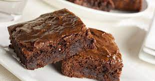

Brownies

These brownies with chocolate chips are the best brownies I've ever had!
You want to eat something chocolatey ? Something good ? Something that can be prepared quick with ingredients you already have in your house ? Search no further !
Ingredients
- 1 half cup white sugar
- 2 tablespoons butter
- 2 tablespoons water
- 1 and a half cups semisweet chocolate chips
- 2 large eggs, beaten
- 1 half teaspoon vanilla extract
- 2 third cup all-purpose flour
- 1 half teaspoon salt
- 1 quarter teaspoon baking soda
Steps
- Preheat the oven to 325 degrees F (165 degrees C). Grease an 8-inch square pan.
- Combine sugar, butter, and water in a medium saucepan; cook and stir over medium heat until boiling. Remove from heat and stir in chocolate chips until melted and smooth; mix in eggs and vanilla.
Combine flour, salt, and baking soda; stir into the chocolate mixture. Spread brownie batter evenly into the prepared pan.
- Bake in the preheated oven until top is dry and edges have started to pull away from the sides of the pan, about 20 to 30 minutes. Let cool completely before cutting into squares.